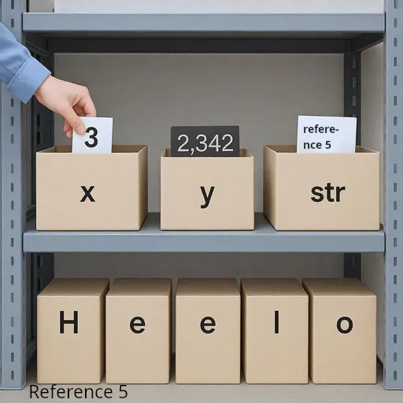
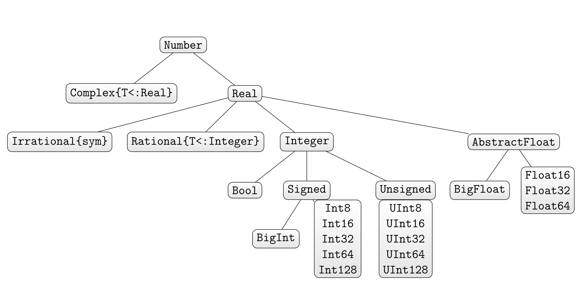
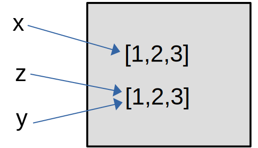

println("Hello World!")Hello World!In this unit we’ll study the basic of a programming language, Julia in our case. The unit ends with suggested class micro-projects and practice questions for the practice quiz that is at the end of the unit. The pace and nature of this unit is aimed at students with little or no programming experience. The units afterwards pick up the pace significantly.
Here is a Julia statement:
println("Hello World!")Hello World!We are calling (or invoking) the function println with the argument "Hello World!". Round brackets after a name are the application of a function, kind of like in mathematics. But in Julia, round brackets also have other uses:
For example, dealing with the order of precedence of computations:
1 + 1 * 45(1 + 1) * 48And also creating tuples:
my_tuple = ("hello", 35, π, "world", '!')
typeof(my_tuple)Tuple{String, Int64, Irrational{:π}, String, Char}Store the following 3 lines into the file ‘test.jl’ and run it either through by runing the command ‘julia test.jl’ from the terminal or through include(“test.jl”) from the REPL.
println("What is your name: ")
name=readline()
println("Hi $name, how are you?")
This whole notebook is created using a package called Weave.jl. But try running these simple commands in:,
julia my_code.jl from the terminal or include(“my_code.jl”) within the REPL)println) and macros (e.g. @show)if-elseif-else)function)Think of variables as a storage box, with a name (tag) on it. The computer’s memory is the storage facility in which you can store all your boxes.

x = 33stores the value 3 in the box tagged x.
x + 2528retrieves the value stored in x and adds 25 to it.
Variables have a type - think of it as the size and shape of the box.
typeof(x)Int64gives the type of the variable x (an Integer value of size 64 bits= 8 bytes).
sizeof(x)8y=34.23
typeof(y)Float64gives the type of the variable y (a Floating point number of size 64 bits= 8 bytes).
isbits(x)truex is a primitive type, i.e. x directly refers to the value of the variable.

Use
@show typemin(Int16) typemax(Int16);typemin(Int16) = -32768
typemax(Int16) = 32767to find the minimal and maximal values that can be represented by integer types.
str = "Hello""Hello"typeof(str)Stringsizeof(str)5isbits(str)falseString is the standard data type for text. It is a composite type. Therefore the variable ‘str’ does not refer to the text “Hello” itself, but to the address (reference, pointer) in memory where the content is stored. Think of the reference as the shelf number in the storage facility (memory).
y = "η" # \eta + [TAB]"η"sizeof(y)2y = "p""p"sizeof(y)1y = 'p''p': ASCII/Unicode U+0070 (category Ll: Letter, lowercase)typeof(y)Charisbits(y)truex = 3.0
y = 4.2
x*y, x+y, x-y, x/y, x^y #In Python it would have x**y (raising to a power)(12.600000000000001, 7.2, -1.2000000000000002, 0.7142857142857143, 100.90420610885693)And for non-numerical types such as Strings:
s1 = "hello " #notice the extra space
s2 = "world"
@show typeof(s1);
s1*s2 #In Python it would have been x+y for concatenationtypeof(s1) = String"hello world"s = "hello "
y = 5
x^y243.0These are examples of operator (method) overloading in Julia: For different data types, different versions of a function/method/operator can be defined.
s[1:end-1]"hello"s^(y-1)*s[1:end-1]"hello hello hello hello hello"Since the operator ' has precedence of *, this is the same as
(s^(y-1))*s[1:end-1]"hello hello hello hello hello"What if we did the brackets the other way?
s^((y-1)*s[1:end-1])MethodError: no method matching *(::Int64, ::String) The function `*` exists, but no method is defined for this combination of argument types. Closest candidates are: *(::Any, ::Any, ::Any, ::Any...) @ Base operators.jl:642 *(::Missing, ::Union{AbstractChar, AbstractString}) @ Base missing.jl:174 *(::Real, ::Dates.Period) @ Dates ~/.julia/juliaup/julia-1.12.6+0.x64.linux.gnu/share/julia/stdlib/v1.12/Dates/src/periods.jl:91 ... Stacktrace: [1] top-level scope @ ~/nextcloud/MATH2504_2026/lecture/quarto/lecture-unit-1.qmd:206
Here, Julia tries to identify an instance of the method “+(.,.)” which takes an Integer and a String as arguments (this is Julia’s “multiple dispatch” paradigm), but doesn’t succeed. The closest candidates are listed in the error message, but none of them fits (e.g.any argument of type Int64 can be converted into types Real, Number, Any, etc).
x = 2
√x #\sqrt + [TAB]1.4142135623730951sqrt(x)1.4142135623730951round(√x, digits = 3)1.414y = -x-2sqrt(y)DomainError with -2.0: sqrt was called with a negative real argument but will only return a complex result if called with a complex argument. Try sqrt(Complex(x)). Stacktrace: [1] throw_complex_domainerror(f::Symbol, x::Float64) @ Base.Math ./math.jl:33 [2] sqrt @ ./math.jl:627 [inlined] [3] sqrt(x::Int64) @ Base.Math ./math.jl:1546 [4] top-level scope @ ~/nextcloud/MATH2504_2026/lecture/quarto/lecture-unit-1.qmd:229
z = sqrt(y + 0im)0.0 + 1.4142135623730951imFor primitive types we have
a1=1; a2=a1; a1=99;
println("After changing the value of a1, the value of a2 is: ", a2)After changing the value of a1, the value of a2 is: 1but for a composite type such as Vector{Float64}
v1=[1,2,3]; v2=v1; v1[1]=99;
println("After changing the value of v1, the value of v2 is: $v2")After changing the value of v1, the value of v2 is: [99, 2, 3]x = 20
y = 5
#swapping x and y: attempt 1
x = y
y = x
@show x; #This is the @show macro
@show y;x = 5
y = 5x = 20
y = 5
#swapping x and y: attempt 2
temp = x
x = y
y = temp
@show x;
@show y;x = 5
y = 20In Julia we can do it without using the variable temp!
x = 20
y = 5
x, y = y, x #Julia specific solution
@show x;
@show y;x = 5
y = 20Now, with composite types:
m1 = rand(1000, 1000) #generates of 1000x1000 matrix with random entries
m2 = rand(1000, 1000)
@time m2, m1 = m1, m2; 0.000014 seconds (36 allocations: 1.688 KiB)takes about as much time as
m1 = rand(10000, 10000)
m2 = rand(10000, 10000)
@time m2, m1 = m1, m2; 0.000009 seconds (9 allocations: 464 bytes)because for composite types only the references are swapped! Compare this to the time required for re-assigning those variables after copying their entire content:
m1 = rand(1000, 1000)
m2 = rand(1000, 1000)
@time m2, m1 = copy(m1), copy(m2); 0.011265 seconds (4.74 k allocations: 15.486 MiB, 51.93% compilation time)So we have seen in-built functions like println and sqrt, but surely there are many more?
println("hello world")hello worldThe println function can also take several arguments.
println("hello", " ", "world")hello worldHere is print without a new line.
print("hello")
print(" ")
print("world")hello worldprintln("hello\nworld") #notice the \n (newline)
println("Here is the next line")hello
world
Here is the next lineAn equivalent use of print:
print("hello")
print("\n")
print("world")
print("\n")
println("Here is the next line")hello
world
Here is the next lineLet’s see some mathematical in-built functions:
exp(1)2.718281828459045ℯ #\euler + [TAB]ℯ = 2.7182818284590...log(ℯ^2), log2(2^5), log10(10^3)(2.0, 5.0, 3.0)abs(-3.5), abs(3.5), abs(3 + 4im)(3.5, 3.5, 5.0)But you can’t do absolute value of a string:
abs("3.5")MethodError: no method matching abs(::String) The function `abs` exists, but no method is defined for this combination of argument types. Closest candidates are: abs(::Bool) @ Base bool.jl:155 abs(::Pkg.Resolve.VersionWeight) @ Pkg ~/.julia/juliaup/julia-1.12.6+0.x64.linux.gnu/share/julia/stdlib/v1.12/Pkg/src/Resolve/versionweights.jl:32 abs(::Missing) @ Base missing.jl:101 ... Stacktrace: [1] top-level scope @ ~/nextcloud/MATH2504_2026/lecture/quarto/lecture-unit-1.qmd:371
length("3.5")3factorial(4)24Note that ‘@show’ does something very similar. It is a macro (all macros have @ in their names).
s="3.5";
@show s;
println(s)s = "3.5"
3.5Macros are evaluated at compile time (when translating the Julia code into machine code) and therefore have access to more information, e.g. the variable name of their argument. For that reason @show can also output the variable name ‘s’ which is convenient for debugging, whereas prinln only has access to the content ‘3.5’ of its argument. ## Type conversions
a=4;
x=Float64(a);
@show typeof(a) a;
@show typeof(x) x;typeof(a) = Int64
a = 4
typeof(x) = Float64
x = 4.0y=sqrt(5);
b=round(y);
@show typeof(y) y;
@show typeof(b) b;typeof(y) = Float64
y = 2.23606797749979
typeof(b) = Float64
b = 2.0Int('a'), Int('b'), Int('A'), Int('B'), Int('α'), Int('∀') #type \alpha and \forall(97, 98, 65, 66, 945, 8704)gives the ascii/unicode for these letters/symbols.
Often those conversions are made implicitly (“multiple dispatch”), e.g.
z=a+x
@show typeof(z);typeof(z) = Float64true, false #In Python it is True and False (caps first letter)(true, false)typeof(true)Bool@show Int(true);
@show Int(false);Int(true) = 1
Int(false) = 05 == 2 + 3 # check for equalitytrue5 != 2 + 3 # check for not being equal (!=)falsefalse && false, false && true, true && false, true && true #logical AND(false, false, false, true)false || false, false || true, true || false, true || true #logical OR(false, true, true, true)(2 != 3) || (2 == 3)true!(2 == 3) # ! (not)trueFor the next block, you need to have the package Random installed: To install it, change to package mode using ], and use add Random.
The REPL modes are * ; to access the shell/terminal temporarily , * ? for help mode * ] for package mode * Ctrl-C or Backspace brings you back to the standard “Julian” prompt.
using Random
Random.seed!(7) #The exclamation mark denotes functions which change the environment (side-effects).
x = rand(1:100) #random number within 1, 2, ..., 100
y = rand(1:100) #random number within 1, 2, ..., 100
@show x, y;
(x == y) || (x != y)(x, y) = (25, 72)trueThe command Random.seed! sets the seed value for the random number generator. Without it, an almost random seed value is generated and random numbers will differ every time you evaluate the following ‘rand’ commands. If you set the seed value, then random numbers will always be the same - every time you run the script (which can be useful for debugging, or comparison).
x < y, x<=y, x ≤ y, x > y, x ≥ y # \le or \ge + [TAB](true, true, true, false, false)(x == y) && (x != y)falsex=[1,2,3]
y=[1,2,3]
x==ytruecompares the content of x to the content of y. To check whether x and y are physically identical (same reference) use
@show x===y;
z=y
@show z===y;x === y = false
z === y = true
if-elseif-else)if 2 < 3 && 2 > 3
println("The world has gone crazy")
endif 2 < 3 || 2 > 3
println("The world makes sense")
endThe world makes sensex = 25.3
if x < 30
println("It is less than 30")
else
println("It is greater or equal to 30")
endIt is less than 30x = 25.3
if x < 20
println("It is less than 20")
elseif x < 30
println("It is less than 30 but not less than 20")
else
println("It is greater or equal to 30")
endIt is less than 30 but not less than 20Let’s use it to compute an absolute value.
x = -3 # some input
if x < 0
println(-x)
else
println(x)
end3Use either the ternary operator condition ? dothisiftrue : dothisiffalse
x = -3 # some input
absx = x < 0 ? -x : x3or using logical AND (&&), making use of Julia’s lazy evalution of logical operators,
x = -3 # some input
x < 0 && println("This is a negative number!")This is a negative number!Here, the second condition for the AND clause && is only evaluated if the first condition evaluates to true. Effectively this behaves like a single-line if statement.
for i in 1:5
println(i)
end1
2
3
4
5for i in 1:3
println(i)
end1
2
3for i ∈ 1:3 # \in + [TAB]
println(i)
end1
2
3for _ ∈ 1:3 # \in + [TAB]
println("hello")
endhello
hello
hellototal = 0
max_val = 10
for i ∈ 1:max_val
global total # This line can be ignored by now
total = total + i
end
println("The total is: $total")
println("And using a formula: ", max_val*(max_val+1)/2)The total is: 55
And using a formula: 55.0Notice the above 55 vs. 55.0. This is because of division which converts an integer to a float.
Using the command break, loops can be left at any time.
for i ∈ 1:13 # \in + [TAB]
if i<5
println("hello $i")
else
break
end
endhello 1
hello 2
hello 3
hello 4Using the command continue, code executation continues at the start of the loop
for i ∈ 1:13 # \in + [TAB]
if i<10
continue
else
println("hello $i")
end
endhello 10
hello 11
hello 12
hello 13While loops give you more control over the loop.
i = 1
while i ≤ 3 # do the following as long as i is smaller or equal than 3
global i
println(i)
i = i + 1
end1
2
3The hailstone sequence: If a number is even, half it, if it is odd, multiply by 3 and add 1. Stop when you reach 1.
n = 7
while n != 1
global n
print(n, ", ")
if n % 2 == 0 # modulo
n = n ÷ 2 # \div + [TAB] Integer division
else
n = 3n + 1
end
end
println(n)7, 22, 11, 34, 17, 52, 26, 13, 40, 20, 10, 5, 16, 8, 4, 2, 1function)We already had logic for an absolute value function (of real values). Now let’s make a function out of it:
function my_abs(x)
if x < 0
return -x
else
return x
end
endmy_abs (generic function with 1 method)We can also implement this as,
function my_abs(x)
if x < 0
return -x
end
return x
endmy_abs (generic function with 1 method)Or even,
function my_abs(x)
if x < 0
return -x
end
x
endmy_abs (generic function with 1 method)which uses that functions by default return the output of the last command.
@show my_abs(-3.5);
@show my_abs(2.3);
@show my_abs(0);my_abs(-3.5) = 3.5
my_abs(2.3) = 2.3
my_abs(0) = 0Functions don’t have to have an argument or a return value:
function print_my_details()
println("Name: Jacob")
println("Occupation: diesel mechanic")
return nothing
end
print_my_details()Name: Jacob
Occupation: diesel mechanicLet’s see the hailstone sequence for the first 10 integers:
#let's "wrap" the code we had before in a function
function hailstone(n_start)
n = n_start
while n != 1
print(n, ", ")
if n % 2 == 0
n = n ÷ 2
else
n = 3n + 1
end
end
println(n)
return nothing
end
hailstone(7)7, 22, 11, 34, 17, 52, 26, 13, 40, 20, 10, 5, 16, 8, 4, 2, 1println("Hailstone sequences: ")
for n in 1:10
hailstone(n)
endHailstone sequences:
1
2, 1
3, 10, 5, 16, 8, 4, 2, 1
4, 2, 1
5, 16, 8, 4, 2, 1
6, 3, 10, 5, 16, 8, 4, 2, 1
7, 22, 11, 34, 17, 52, 26, 13, 40, 20, 10, 5, 16, 8, 4, 2, 1
8, 4, 2, 1
9, 28, 14, 7, 22, 11, 34, 17, 52, 26, 13, 40, 20, 10, 5, 16, 8, 4, 2, 1
10, 5, 16, 8, 4, 2, 1When you can implement a function in one line, you can avoid using the function keyword and instead use mathematical notation for defining functions
times_2(x) = 2x
@show times_2(times_2(10)) #this uses the function twice.
@show (times_2 ∘ times_2)(10) # alternative way of writing function composition
@show [1,2,3] |> times_2; # or, using piping operator |>times_2(times_2(10)) = 40
(times_2 ∘ times_2)(10) = 40
[1, 2, 3] |> times_2 = [2, 4, 6]One can even define anonymous function without function names
[1,2,3] |> (x->2x)3-element Vector{Int64}:
2
4
6So up to this point we have the basics of programming including variables, logical statements, conditional statements, loops, and functions. One other major component is data. For this let us consider arrays.
[2, 4, -3, 15] #this is an array4-element Vector{Int64}:
2
4
-3
15Note that in Julia 1-dimensional arrays are also called Vector. Arrays represent a “block of memory” (RAM). Its address in RAM (random access memory) can be retrieved as follows:
a = [2, 4, -3, 15]
b = a #This just makes b point to the same chunk of memory as a.
@show pointer(a);
@show pointer(b);pointer(a) = Ptr{Int64}(0x00007f8484b60660)
pointer(b) = Ptr{Int64}(0x00007f8484b60660)You can see that both a and b “point” to the same location in memory (a reference, or pointer).
We can get an element of an array by “indexing”. In Julia (like MATLAB and R) indexing starts at 1. In languages like Python, Javascript, and C/C++, indexing starts at 0.
@show a[1];
@show a[2];
@show a[3];
@show a[4];a[1] = 2
a[2] = 4
a[3] = -3
a[4] = 15You can also change the elements this way.
a[3] = -100.
@show a;a = [2, 4, -100, 15]@show b;b = [2, 4, -100, 15]length(a)4Note that strings are kind of like arrays.
my_string = "Hello"
@show length(my_string)
@show my_string[1]
@show my_string[5];length(my_string) = 5
my_string[1] = 'H'
my_string[5] = 'o'But arrays are mutable (meaning you can change them) while strings are not (they are immutable).
my_string[5] = 'x'MethodError: no method matching setindex!(::String, ::Char, ::Int64) The function `setindex!` exists, but no method is defined for this combination of argument types. Stacktrace: [1] top-level scope @ ~/nextcloud/MATH2504_2026/lecture/quarto/lecture-unit-1.qmd:817
The error above is how Julia tries to tell you that you can’t change the string.
Arrays don’t have to be arrays of just numbers, for example.
my_other_array = ["hello", 2, sqrt, 3.4, "bye", [1, 2, 3]]6-element Vector{Any}:
"hello"
2
sqrt (generic function with 19 methods)
3.4
"bye"
[1, 2, 3]is an array of components of type Any (the most general type Julia provides).
Compare this to the definition of a tuple
my_other_array = ("hello", 2, sqrt, 3.4, "bye", [1, 2, 3]);
typeof(my_other_array)Tuple{String, Int64, typeof(sqrt), Float64, String, Vector{Int64}}Let’s make a function that sums up entries of an array (assuming it is an array of numbers).
function my_sum(input_array)
total = 0
for i in 1:length(input_array)
total += input_array[i]
end
return total
end
a = [1, 10, 100, 1000]
my_sum(a)1111There is also an in-built function for this.
sum(a)1111But you can do more things with the in-built sum. For example:
a = [-1,10,-100,1000]
@show sum(a)
@show sum(abs, a); #sum the absolute valuessum(a) = 909
sum(abs, a) = 1111Arrays can be extended with the push! function. Note that the ! is part of the function name and indicates to us that the function modifies the array.
my_array = Int[] #empty array of integers
push!(my_array, -3)
@show my_array
push!(my_array, 10)
@show my_array;my_array = [-3]
my_array = [-3, 10]Let’s modify our hailstone function to return an array with the sequence instead of printing the sequence.
function hailstone(n_start)
sequence = Int[]
n = n_start
while n != 1
push!(sequence, n) # was before print(n, ", ")
if n % 2 == 0
n = n ÷ 2
else
n = 3n + 1
end
end
push!(sequence, n) # was before println(n)
return sequence # was before return nothing
end
hailstone(7)17-element Vector{Int64}:
7
22
11
34
17
52
26
13
40
20
10
5
16
8
4
2
1The Collatz Conjecture says that for every starting value the sequence eventually hits 1. Let’s try to disprove it by seeing if this program gets stuck.
for n in 1:10^3
hailstone(n)
endIt didn’t get stuck (try even changing 10^3 to 10^6).
Now let’s see what was the longest sequence.
length_of_longest = 0
n_of_longest = 1
for n in 1:10^3
global length_of_longest, n_of_longest
seq_len = length(hailstone(n))
if seq_len > length_of_longest
length_of_longest = seq_len
n_of_longest = n
end
end
println("Longest sequence is of length $length_of_longest when you start at $n_of_longest.")Longest sequence is of length 179 when you start at 871.One very easy way to create an array is via an array comprehension.
[i^2 for i in 1:10]10-element Vector{Int64}:
1
4
9
16
25
36
49
64
81
100The maximum function finds the maximal value of an array. We can find the 179 value from above just like this.
maximum([length(hailstone(n)) for n in 1:10^3])179What if we wanted to also know which index attains this maximum? See the findmax function.
findmax([length(hailstone(n)) for n in 1:10^3])(179, 871)Here are several micro-projects aimed at providing practice using the concepts above. For each of them you may need a bit more functionality and in-built functions that what we explored so far. You can get that from web-search, LLM-help, peer help, or staff help.
Micro-Project 1: Write a little program in that gives a student a mathematics arithmetic quiz with the operations +, - and *. It has input numbers in the range from 1 to 200. Students get asked questions and need to respond with the correct answer. After 10 questions the students gets a summary of how many they got correct and what they got wrong. You may need to explore the readline and parse functions.
Micro-Project 2: Write a little program that is a Tik-Tak-Toe game between two players. On each turn, the state of the board is re-printed. You can use 1,…,9 as input for the cells.
Micro-Project 3: Write a program that works on some fixed long string (e.g. several paragraphs of text such as the text here describing the micro projects). The program should output the character count, the word count, and perhaps other statistics about the text.
a = ["$i" for i in 1:3]
s = a[1]*a[2]*a[3]What is the type and value of s?
my_minimum that gets an array of numbers and returns the minimal value in the array. Do not use the minimum in-built function as part of your answer.function my_minimum(a)
return minimal_value
endFill in the code for the function.
num_sub_str which accepts a string main_string and a string sub_string, and returns a count of how many times sub_string is in main_string.function num_sub_str(main_string, sub_string)
return number_occurrences
endFill in the code for the function.
tamid_nahon which gets two boolean values as inputs, a, and b.function tamid_nahon(a, b)
return !(a && b) == !a || !b
endFor what combinations of a and b is the return value true? For what is it false?
n terms of the Fibonacci sequence, returning these terms in an array.function fibonacci(n)
arr = [0, 1]
return arr
endFill in the code for the function.